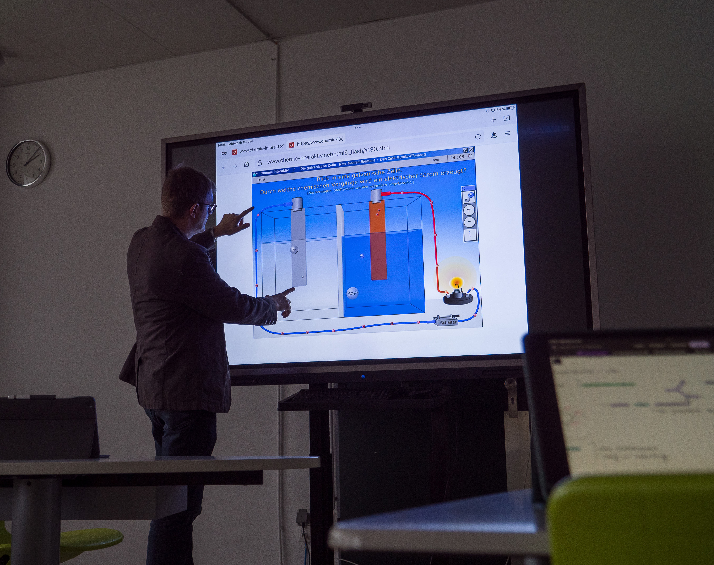

Das NCG betreibt an vielen Stellen des Schulalltags eine aktive Schulentwicklung, sei es bei der Umsetzung der Digitalisierung, der Weiterentwicklung des Fahrtenkonzepts oder der Einführung neuer Unterrichtseinheiten im Rahmen der Umstellung auf G9.
Dabei hat die Lehrerkonferenz beschlossen, keine dauerhafte Steuergruppe einzusetzen. Stattdessen werden Projekte von Arbeitsgruppen, Fachschaften, Koordinatoren oder Einzelpersonen in die Lehrer- und Schulkonferenz eingebracht, um das NCG kontinuierlich weiterzuentwickeln.
Ein besonders gelungenes Beispiel ist die Arbeit der Projektgruppe „Pädagogische Geschlossenheit“, die in den Jahren 2017–2020 große Anstrengungen unternommen hat, um verschiedene Bereiche des Schulalltags zu verbessern.
Ein Ergebnis dieser Arbeit war unter anderem der einstimmige Beschluss zur Einführung eines neuen umfassenden Vertretungskonzepts.
Alle weiteren Ergebnisse dieser Projektgruppe sind im folgenden Bericht einsehbar:
Abschlussbericht der Arbeitsgruppe Pädagogische Geschlossenheit